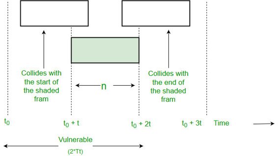

Local Area Network (LAN) is a data communication network connecting various terminals or computers within a building or limited geographical area.The connection among the devices could wired or wireless. Ethernet, Token Ring and Wireless LAN using IEEE 802.11 are examples of standard LAN technologies.
Ethernet :-
Ethernet is most widely used LAN Technology, which is defined under IEEE standards 802.3. The reason behind its wide usability is Ethernet is easy to understand, implement, maintain and allows low cost network implementation. Also, Ethernet offers flexibility in terms of topologies which are allowed. Ethernet operates in two layers of OSI model, Physical Layer and Data Link Layer. For Ethernet the protocol data unit is Frame, since we mainly deal with DLL. In order to handle collision, the Access control mechanism used in Ethernet is CSMA/CD.
Manchester Encoding Technique is used in Ethernet.

Since we are talking about IEEE 802.3 standard Ethernet therefore, 0 is expressed by a high-to-low transition, a 1 by low-to-high transition. In both Manchester Encoding and Differential Manchester Encoding Buad rate is double of bit rate.
Baud rate = 2* Bit rate
Ethernet LANs consist of network nodes and interconnecting media or link. The network nodes can be of two types:
Data Terminal Equipment (DTE):- Generally, DTEs are the end devices that convert the user information into signals or reconvert the received signals. DTEs devices are : personal computers, workstations, file servers or print servers also referred to as end stations. These devices are either the source or the destination of data frames. The data terminal equipment may be a single piece of equipment or multiple pieces of equipment that are interconnected and perform all the required functions to allow the user to communicate. A user can interacts to DTE or DTE may be user.
Data Communication Equipment (DCE):- DCEs are the intermediate network devices that receive and forward frames across the network. They may be either standalone devices such as repeaters, network switches, routers or may be communications interface units such as interface cards and modems. The DCE performs functions such as signal conversion, coding and may be a part of the DTE or intermediate equipment.
Currently, these data rates are defined for operation over optical fibers and twisted-pair cables:
i) Fast Ethernet
Fast Ethernet refers to an Ethernet network that can transfer data at a rate of 100 Mbit/s.
ii) Gigabit Ethernet
Gigabit Ethernet delivers a data rate of 1,000 Mbit/s (1 Gbit/s).
iii) 10 Gigabit Ethernet
10 Gigabit Ethernet is the recent generation and delivers a data rate of 10 Gbit/s (10,000 Mbit/s). It is generally used for backbones in high-end applications requiring high data rates.
ALOHA
The Aloha protocol was designed as part of a project at the University of Hawaii. It provided data transmission between computers on several of the Hawaiian Islands involving packet radio networks. Aloha is a multiple access protocol at the data link layer and proposes how multiple terminals access the medium without interference or collision.
There are two different versions of ALOHA:
1. Pure Aloha
Pure Aloha is an un-slotted, decentralized, and simple to implement protocol. In pure ALOHA, the stations simply transmit frames whenever they want data to send. It does not check whether channel is busy or not before transmitting. In case, two or more stations transmit simultaneously, collision occurs and frames are destroyed. Whenever any station transmits a frame, it expects the acknowledgement from the receiver. If it is not received within specified time, the station assumes that the frame or acknowledgement has been destroyed. Then, the station waits for a random amount of time and sends the frame again. This randomness helps in avoiding more collisions. This scheme works well in small networks where the load is not much. But in largely loaded networks, this scheme fails poorly. This led to the development of Slotted Aloha.
To assure pure aloha: Its throughput and rate of transmission of frame to be predicted.
For that to make some assumption:
i) All the frames should be the same length.
ii) Stations can not generate frame while transmitting or trying to transmit frame.
iii)The population of stations attempts to transmit (both new frames and old frames that collided) according to a Poisson distribution.

Vulnerable Time = 2 * Tt
Efficiency of Pure ALOHA:
Spure= G * e^-2G
where G is number of stations wants to transmit in Tt slot.
Maximum Efficiency:
Maximum Efficiency will be obtained when G=1/2
(Spure)max = 1/2 * e^-1
= 0.184
Which means, in Pure ALOHA, only about 18.4% of the time is used for successful transmissions.
2. Slotted Aloha
This is quite similar to Pure Aloha, differing only in the way transmissions take place. Instead of transmitting right at demand time, the sender waits for some time. In slotted ALOHA, the time of the shared channel is divided into discrete intervals called Slots. The stations are eligible to send a frame only at the beginning of the slot and only one frame per slot is sent. If any station is not able to place the frame onto the channel at the beginning of the slot, it has to wait until the beginning of the next time slot. There is still a possibility of collision if two stations try to send at the beginning of the same time slot. But still the number of collisions that can possibly take place is reduced by a large margin and the performance becomes much well compared to Pure Aloha.

Collision is possible for only the current slot. Therefore, Vulnerable Time is Tt.
Efficiency of Slotted ALOHA:
Sslotted = G * e^-G
Maximum Efficiency:
(Sslotted)max = 1 * e^-1
= 1/e = 0.368
Maximum Efficiency, in Slotted ALOHA, is 36.8%.
Image Reference: Wikipedia ,Technical University of Munich
{kind=link}
References:
https://www.cisco.com/c/en/us/tech/lan-switching/ethernet/index.html
https://en.wikipedia.org/wiki/Ethernet